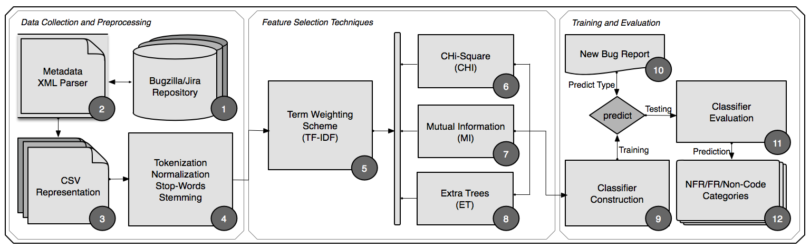

Automatically Capturing Quality-Related Concerns in Bug Report Descriptions
Project Description. In the early phases of a project, software architects and developers design solutions to satisfy quality concerns. However, as a byproduct of the long-term maintenance effort, qualities tend to erode, causing quality-related bugs to surface across the codebase. In principle, quality-related concerns not only can be expensive and difficult to detect, but they can have a detrimental effect on the system operating as intended. Moreover, quality-related concerns can directly affect users' experiences at large. To address this problem, we build a quality-based bug classifier that leverages several feature selection techniques, TF-IDF, Chi-square, Mutual Information, and Extra Randomized Trees, including the incorporation of various machine learning algorithms. Our results indicate that Random Forest with the (TF-IDF+Chi-square) achieved the best results for detecting six-quality related types, achieving a precision of 76%, recall of 70%, and F1 of 70%. However, the same approach returned low precision of 48%, recall of 15%, and F1 of 23% for detecting functional-related bugs. We argue that such low performance has resulted in an aftermath of overlapping content caused by functional and quality-related information. Hence, a clear-cut separation of these two classes of concerns opens another challenging topic for which we aim to expand in future work.
